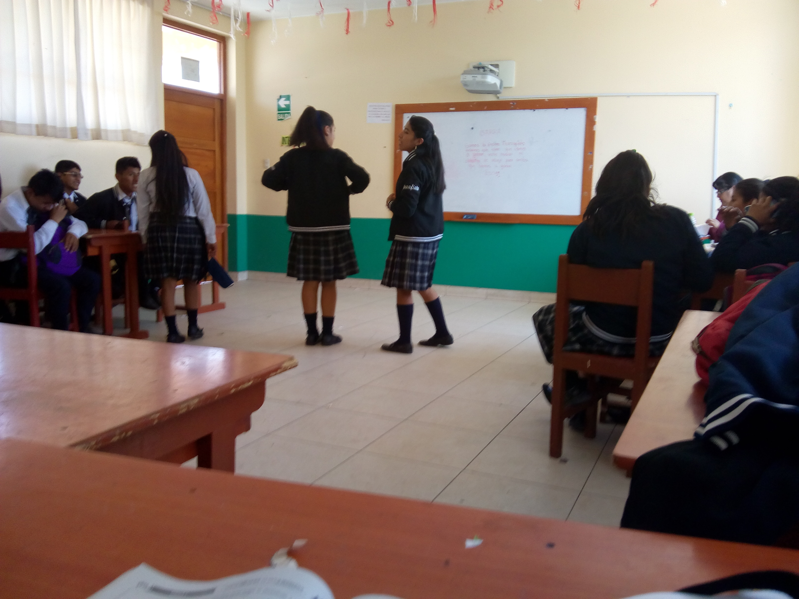

1. Cuando empezo la primera guerra mundial
2.Cuando fue la segunda guerra mundial 
3. Cuando fue la masacre en Munich
4. Cuando fue el terromoto y tsunami en Japon
5. En que año fue el asesinato de John f. Kennedy
6. Que año fue la caida del muro de Berlin
7. En que año fue el atentado a las torres gemelas
8. En que año alunizo el apolo 11
9. En que año fue el bombardeo a Hiroshima y Nagasaki
10. En que año inicio el Holocausto en Alemania